Schlussdurchsicht
Die elf gebauten Motive nebeneinander — vier davon neu.
Zum Entscheiden in einem Durchgang.
Der zweite Durchgang.
Fünf sind gestrichen: Schuppenwerk, Kettenreif, Granulat, Rankengeflecht
und Gitterschale. Vier neue stehen dafür da. Das Votum ist meine
Einschätzung, kein Beschluss. Die Bilder sind der Katalogrender in 620
Punkten — also die App selbst, keine Vorschau; die Zahlen sind an
derselben Zeichnung gemessen, ausmalbar heißt ab 80 Bildpunkten
Fläche.
9 behalten
2 behalten, mit Anmerkung
0 streichen
Die vier neuen
Zwei davon gibt es nur, weil ein Baustein dazugekommen ist: die
Auslöschung — eine Linie, die eine andere unterbricht. Genau
daran waren Schuppenwerk und Kettenreif gescheitert. Technisch ist es
destination-out: Der Alphawert wird auf null gesetzt, nicht
überdeckt. Deshalb verschwindet die untenliegende Linie, und die Stelle
bleibt trotzdem ausmalbar — ein hell übermaltes Band wäre eine Wand
geblieben.
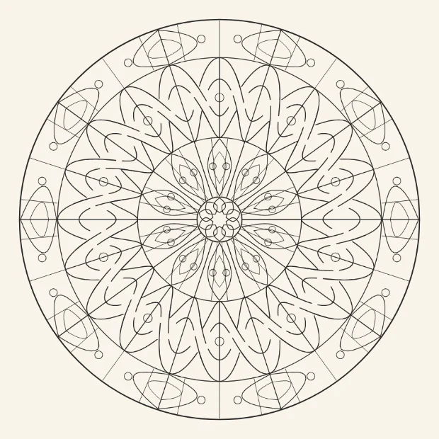
Flechtband neubehalten
10 Achsen · 337 ausmalbare Felder von 627 ·
Median 103 px² · größtes Feld 1,9 %
steht in Feinwerk
Das erste Motiv der App, in dem ein Strang wirklich unter einem anderen hindurchgeht. Genau daran waren Schuppenwerk und Kettenreif gescheitert — hier ist der fehlende Baustein gebaut: eine Linie, die eine andere unterbricht. 337 ausmalbare Felder, größtes 1,9 %.
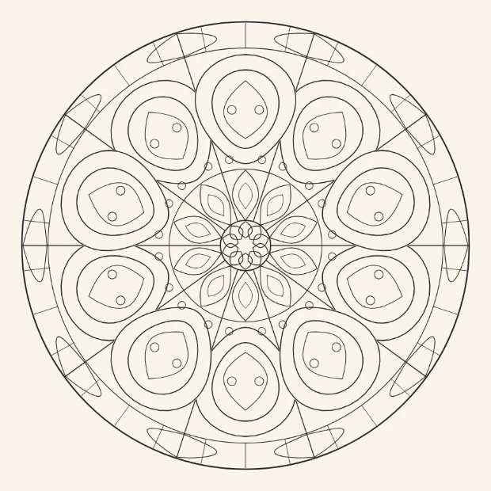
Kettenglied neubehalten, mit Anmerkung
10 Achsen · 251 ausmalbare Felder von 396 ·
Median 156 px² · größtes Feld 2,4 %
steht in Feinwerk
Die Wiedervorlage von Kettenreif, diesmal mit echter Verschränkung: Jedes zweite Glied liegt sichtbar über seinem Nachbarn. Jetzt liest es sich als Kette. Was mahnt: Mit 251 ausmalbaren Feldern hat es die wenigsten der elf — die Glieder sind groß, und viel Fläche geht an ihre Ringkörper.
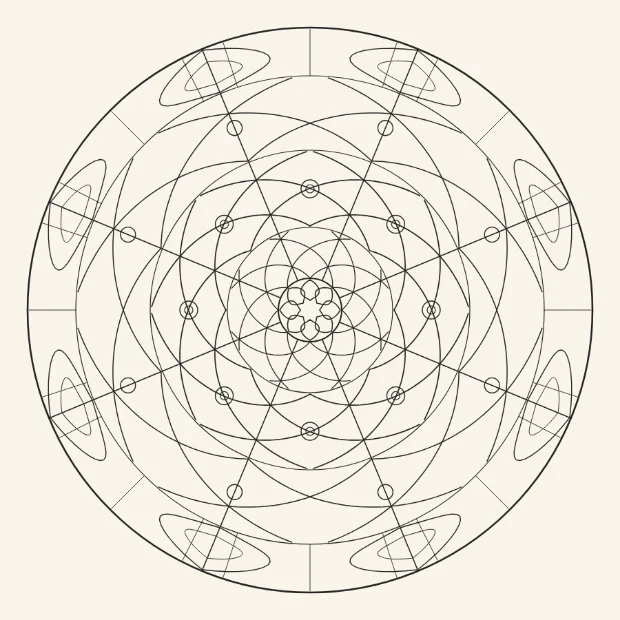
Schneckenwerk neubehalten
8 Achsen · 321 ausmalbare Felder von 503 ·
Median 163 px² · größtes Feld 1,6 %
steht in Feinwerk
Die Signatur der Filigranarbeit, und der Familie fehlte sie: der gewickelte Draht. Paarweise gegenläufige Schnecken in drei Bändern, dazu die Schneckenaugen als Perlen. 321 ausmalbare, Median 163, größtes Feld 1,6 %.
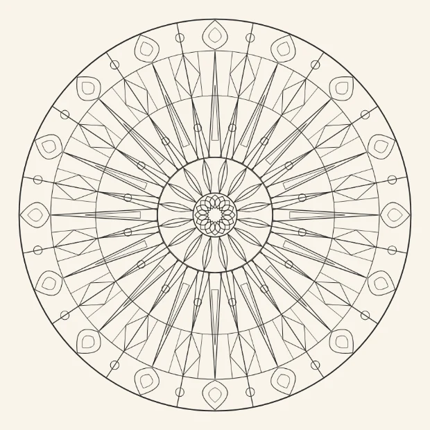
Nadelkrone neubehalten
16 Achsen · 402 ausmalbare Felder von 740 ·
Median 93 px² · größtes Feld 0,6 %
steht in Feinwerk
402 ausmalbare Felder und mit 0,6 % ein sehr kleines größtes — technisch das sauberste der vier neuen. Anmerkung: Die Nadeln sind sehr fein, daher der Median von 93. Es ist das dichteste der vier, ohne dabei splittrig zu werden.
Die sieben, die bleiben
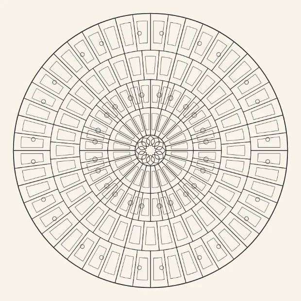
Zellenwerk behalten
12 Achsen · 361 ausmalbare Felder von 542 ·
Median 355 px² · größtes Feld 0,5 %
steht in Feinwerk
Unverwechselbar — niemand hält Zellenschmelz für etwas anderes —, großzügige Zellen (Median 355) und mit 0,5 % das kleinste größte Feld aller elf. Nichts daran wackelt.
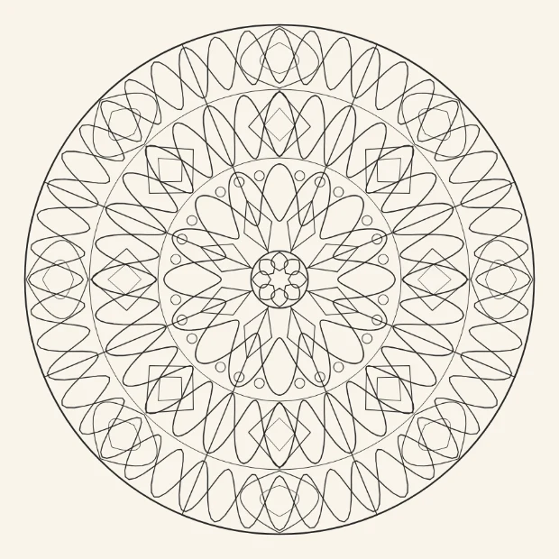
Tauwerk behalten
8 Achsen · 409 ausmalbare Felder von 603 ·
Median 426 px² · größtes Feld 0,6 %
steht in Feinwerk
Drei Zöpfe, sofort lesbar, Median 426. Von den acht Achsen lebt es: große Felder, ruhiges Ausmalen, trotzdem 409 ausmalbare. Das Gegenstück zu den sechzehnachsigen.
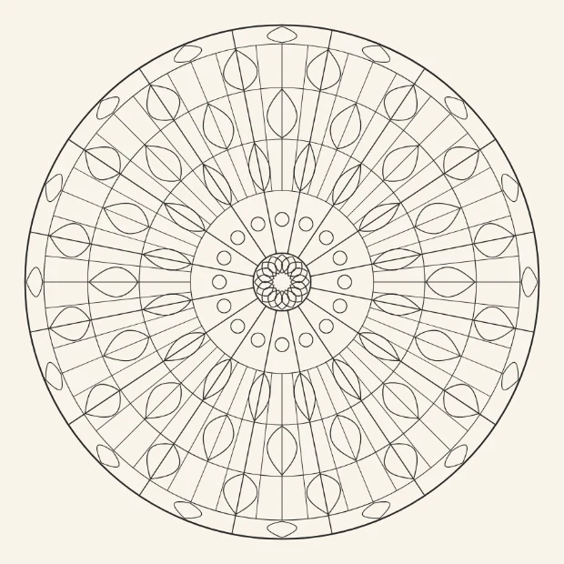
Spitzenrad behalten
16 Achsen · 449 ausmalbare Felder von 679 ·
Median 267 px² · größtes Feld 0,6 %
steht in Feinwerk
Vier Bänder, klar getrennt, nichts überlagert sich. 449 ausmalbare bei Median 267 — bei sechzehn Achsen sind das rund 28 Entscheidungen. Dicht, aber nicht mühsam.
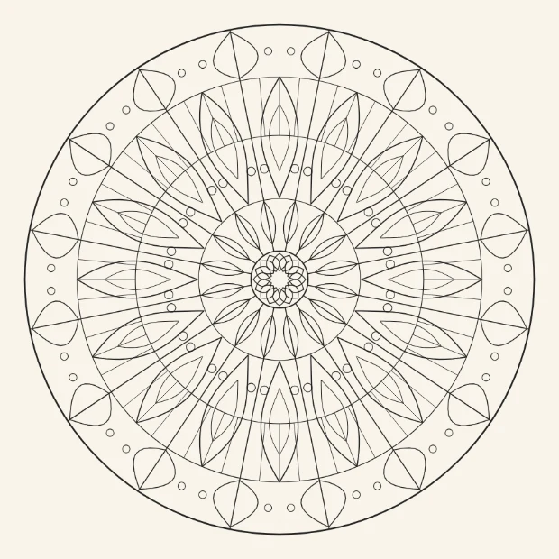
Perlgrat behalten
16 Achsen · 389 ausmalbare Felder von 513 ·
Median 448 px² · größtes Feld 1,5 %
steht in Feinwerk
Die großzügigsten Felder der Familie (Median 448) und trotzdem 389 ausmalbare. Wer die Dichte scheut, fängt hier an.
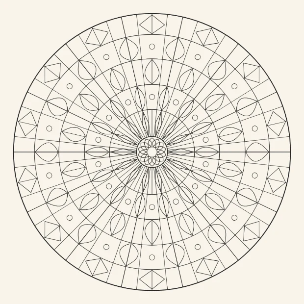
Sprossenband behalten, mit Anmerkung
14 Achsen · 432 ausmalbare Felder von 614 ·
Median 523 px² · größtes Feld 0,9 %
steht in Feinwerk
Fünf Bänder mit Sprossen, Median 523 — die zweitgroßzügigsten Felder. Was mir weiter nicht gefällt: die Nabe. Die Sprossen des innersten Bandes laufen ab r=46, und 42 Linien treffen sich auf engstem Raum zu einem struppigen Büschel. Das innerste Band sollte weiter außen anfangen — eine Zeile, wenn Sie mögen.
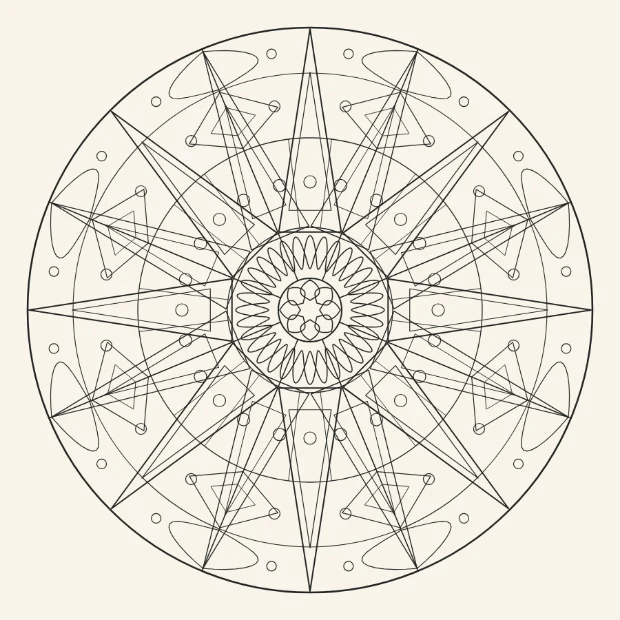
Kordelstern behalten
8 Achsen · 505 ausmalbare Felder von 991 ·
Median 98 px² · größtes Feld 1,1 %
steht in Geometrisch-klassisch
Die höchste Zahl ausmalbarer Felder von allen (505) und das grafischste Bild. Anmerkung: Die Strahlen sind sehr fein, der Median liegt bei 98. Wer die Nadeln einzeln färben will, braucht den Zoom.
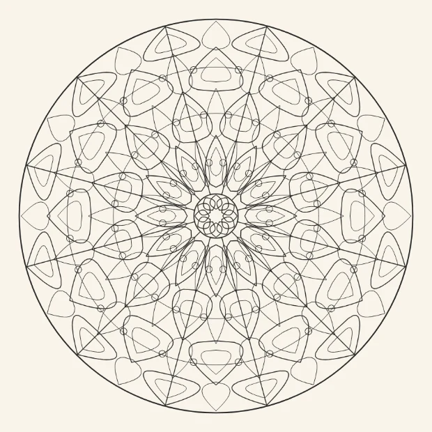
Tropfensaum behalten
12 Achsen · 487 ausmalbare Felder von 1046 ·
Median 72 px² · größtes Feld 1,4 %
steht in Natur
Vier Reihen genesteter Tropfen, 487 ausmalbare — die zweithöchste Zahl. Die doppelte Innenkontur trägt hier sichtbar: Jeder Tropfen hat einen Kern.
Wo Feinwerk damit steht
Neun Motive in Feinwerk, dazu Kordelstern in Geometrisch-klassisch und
Tropfensaum in Natur. Damit ist Feinwerk die größte Familie der App —
vor Anlagen mit acht. Die Kunstgriffe: Zellen, Zopf, Bänder, Blätter,
Sprossen, Nadeln, Schnecken, Flechte, Kette. Keiner doppelt.
Ich habe diesmal nichts zum Streichen. Das ist keine Nachsicht,
sondern die Folge des ersten Durchgangs: Was nicht trug, ist weg, und
die vier neuen sind gegen dieselben Grenzen geprüft — größtes Feld
zwischen 0,5 und 2,4 Prozent, die Grenze des Prüflaufs liegt bei 4.
Die zwei Anmerkungen sind Nacharbeit, kein Streichgrund.